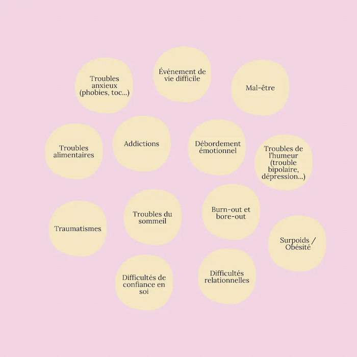

Célia Tondu
Psychologue en ligne, spécialisée dans la prise en charge des addictions et des troubles du comportement alimentaire (TCA).
Une écoute bienveillante et un espace de parole pour :
- Retrouver confiance en vous et vous affirmer
- Comprendre et accueillir vos émotions
- Surmonter des événements de vie
- Développer une meilleure qualité de vie et des relations plus épanouissantes
« C’est au moment où je m’accepte tel que je suis, que je deviens capable de changer. » Carl Rogers
Qui suis-je ?
Psychologue Clinicienne, spécialisée dans la prise en charge des addictions et des troubles du comportement alimentaire (TCA), je propose des consultations individuelles pour adultes via internet.
Formée à la psychologie intégrative, j’ajuste mes méthodes en fonction des besoins spécifiques de chaque personne. Mon approche repose sur divers courants psychothérapeutiques (TCC, thérapie humaniste, thérapie des schémas, psychanalyse, ACT, etc.). L’accompagnement que je propose est centré sur la personne, en tenant compte de votre histoire, de vos aspirations et de vos ressources personnelles.
Pourquoi consulter un psychologue ?
De nombreuses raisons peuvent vous amener à consulter un.e psychologue.
Le besoin de consulter est une expérience personnelle, unique à chacun. Que vous viviez une difficulté temporaire ou un mal-être plus profond, je vous propose un espace bienveillant pour explorer ensemble vos émotions, vos questionnements et les origines de vos souffrances.
Cette liste n’est pas exhaustive. N’hésitez pas à me contacter si vous avez des questions.
À distance
Afin de rendre accessible ma pratique, je propose des téléconsultations.
Vous pouvez choisir le créneau qui vous convient, peu importe où vous êtes.
Tarifs
Consultation Adultes : 60€
Consultation Étudiants (sur présentation de justificatifs) : 50€
Une séance dure environ 50 minutes.